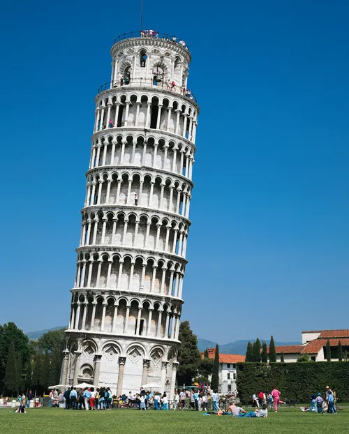
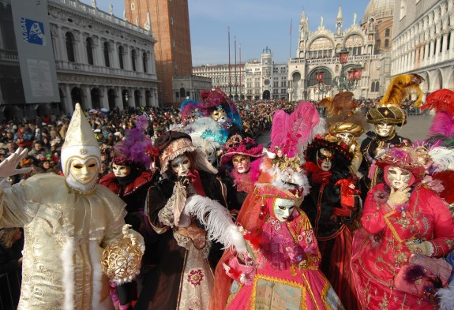
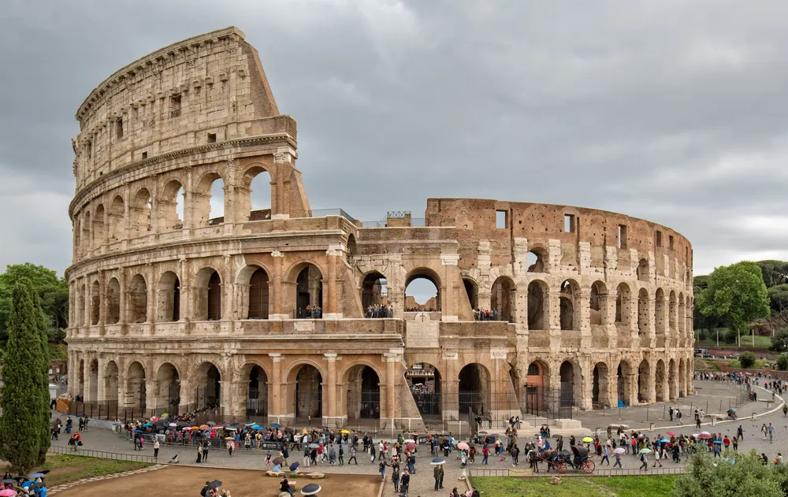
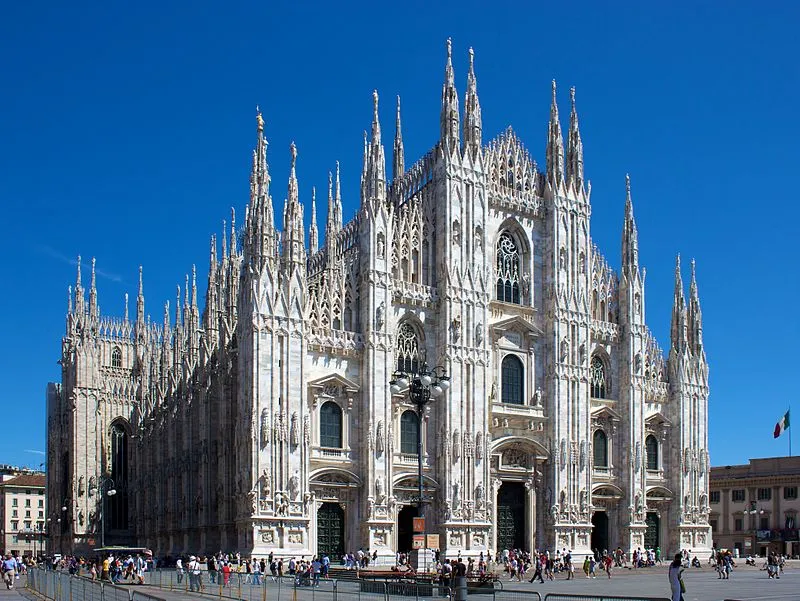
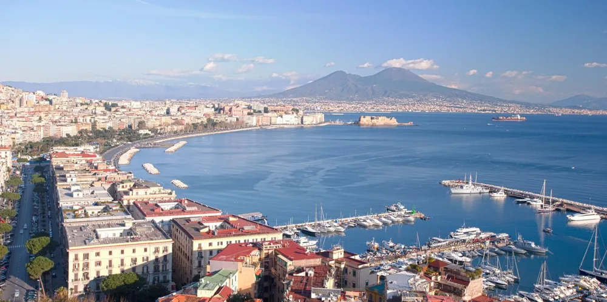

Italy(이탈리아, Italia)
| 인구 | 5892만명 | 종교 | 가톨릭, 기타 |
|---|---|---|---|
| 언어 | 이탈리아어 | 면적 | 302,069km2 |
| 화폐 | 유로(€) | 국화 | 데이지 |

베네치아 카니발 축제
매년 사순절 전날까지 10여일 동안 개최되는 세계 10대 축제 중 하나로, 이탈리아 최대 축제이자 부활절을 기준으로 사순절 전에 끝난다. 약 300만 명의 방문객과 함께하며, 축제 기간에는 산 마르코 광장을 중심으로 베네치아 전역에서 가면축제, 가장행렬, 연극 공연, 불꽃 축제 등이 열린다.
베니스 국제 영화제
이탈리아의 국제 영화제로, 베네치아 리도 섬에서 매년 개최된다. 칸 영화제, 베를린 국제 영화제와 함께 세계 3대 영화제 중 하나로 불린다. 상징물과 트로피 모양은 베네치아답게 사자이다. 정확히는 베네치아 비엔날레의 일부로, 영화 분야의 비엔날레이다.


Roma
로마(Rome)는 이탈리아 반도 중부 지역 테베레 강 연안에 있는 도시로, 이탈리아의 수도이자 최대 도시이며 라치오의 주도이다. 과거 로마 제국의 수도로서 세계 수도로 불린 도시로 세계사에서 매우 중요한 지역이자 수많은 역사 유적으로 세계적인 관광도시이자 서양 문명을 대표하는 도시이다.
Milano(Milan)
이탈리아 북부에 위치한 이탈리아 제2의 도시이자 롬바르디아의 중심도시로, 롬바르디아 평원에 위치하면서 포강이 흐르고 있다. 밀라노는 국제, 다국적 도시로 평가되는데 인구의 15%가 외국인이기 때문이다. 밀라노는 이탈리아의 경제수도라 할 정도로 이탈리아 최대의 경제 중심지이다. 경제의 중심지이면서도 많은 문화재와 문화 시설이 있어 관광의 중심지이기도 하다. 또한 세계 패션/디자인의 중심지여서 유명 패션/브랜드의 본사와 각종 박람회가 집중된다.


Napoli(Naples)
이탈리아 캄파니아의 주도이자 남이탈리아의 중심 도시로 로마와 밀라노에 이은 이탈리아 제3의 도시다. 이탈리아 통일 전까지 천 년 가까이 북이탈리아와는 판이한 남이탈리아의 정치적 중심지였으며, 지중해에 닿아 있는 항구도시이다.